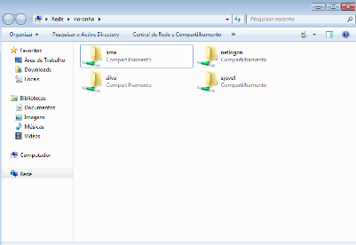

SMB
Instalação
Comandos de instalação no alpine linux e configuração:
apk add samba :
Este comando instala o pacote de software Samba em um sistema Alpine Linux.
rc-service samba status :
Este comando verifica o status atual do serviço Samba. Ele consulta o gerenciador de serviços para determinar se o Samba está em execução ou parado. Isso pode ajudar a solucionar problemas verificando se o serviço está ativo.
/etc/init.d/samba [opção] start vai iniciar o samba
samba-tool domain provision –use-rfc2307 –interactive
é usado para provisionar um novo domínio Samba Active Directory e habilitar as extensões NIS (Network Information Service). O NIS é um protocolo para compartilhar informações de usuário e grupo entre sistemas Unix.

Esse comando é para o serviço do servidor samba .
Configuração
Incluir o(s) nome(s) e o conteúdo do(s) arquivo(s) de configuração.
- Criar 2 grupos para dois de seus sobrenomes;
Na Criação dos Grupos ira ser feito dois Grupos com o seu sobrenome Com duas OU Norte é Sul:

Nesse Comando é Criado os Grupos na Qual eles são Lima,Silva e Támbem foi criado os usuarios dos Grupos Correspondente.
- Criar 4 usuários, dois para cada um dos sobrenomes;
Nesta imagem e Criado Quatro usuarios para os Grupos Lima,Silva:
esses usuarios são criados pois todo servidor precisa de usarios no Banco de Dados e no Samba não pode ser Diferente.
- Compartilhar duas pastas com dois de seus sobrenome, compartilhado para o grupo com o sobrenome correspondente.
Compartilhamento de pastas:
comandos:
cd /srv/samba
nano /etc/samba/smb.conf
modificar o arquivo /etc/hosts e
/etc/hostname
configurar o arquivo /etc/samba/smb.conf
Arquivo /etc/samba/smb.conf configurado:

Teste
Pra fazer o teste se está funcionando tem que logar em outro usuarios dos grupos: 
Nesta imagem está logado um usuario do grupo Lima.